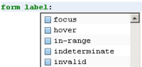

{kind=link}
PHP
NetBeans PHP IDE 提供了一个快速集成开发环境，只需下载一个小文件即可创建、运行和调试 PHP 应用程序。
请参见 PHP 开发。

HTML、JavaScript 和 CSS
NetBeans IDE 为 HTML、JavaScript 和 CSS 提供了全面的编辑器支持。可以利用完善的语法突出显示、代码完成、弹出式文档和错误检查功能来处理 HTML、CSS 和 JavaScript 代码，包括 HTML 5、JavaScript 1.7 和 E4X（嵌入的 XML 对象）的语义突出显示。编辑器可识别 JavaScript 文件中的 HTML 代码，也可识别 HTML 文件中的 JavaScript 代码。编辑器还可识别 XHTML、PHP 和 JSP 文件中的 HTML 和 JavaScript 代码。
HTML 
您可以在 IDE 中使用编辑器快速将代码包含在标记中，也可以使用新的提示删除包含标记。可以删除样式块或 .css 文件的内联样式。
CSS
NetBeans IDE 支持 CSS 3。重构、语义突出显示、标记实例和其他功能已根据 CSS3 代码进行了改编。CSS 代码完成已扩展到完整的 HTML 元素、CSS3 属性及其值、新的伪类和伪元素以及名称空间前缀。特定于供应商的属性（短划线前缀属性）也已添加到代码完成中。"Navigator"（导航器）窗口现将 CSS 类、ID、元素、名称空间和规则显示在单独的元素集中。
JavaScript
在 "JavaScript Options"（JavaScript 选项）面板中指定浏览器类型和版本时，编辑器会根据您键入的内容提供浏览器兼容性信息。
可以将窗体和表的代码片段方便地从 HTML 组件面板拖放至编辑器中。在可视 CSS 编辑器中，可以编辑 CSS 规则并预览结果。
使用 jQuery 改善 Web 页的外观和可用性



Groovy 和 Grails
NetBeans IDE 直接支持 Groovy（用于 Java 平台的动态脚本语言）和 Grails（利用 Groovy 语言的 Web 应用程序框架）。可以使用 IDE 开发百分之百纯 Groovy 应用程序，或者将 Groovy 与 Java 混合使用并在 Java 项目中利用 Groovy 的动态特性。